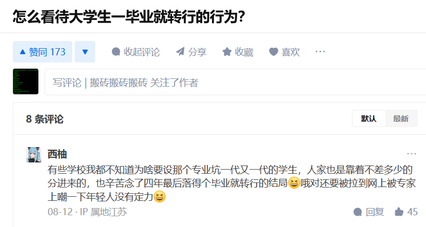
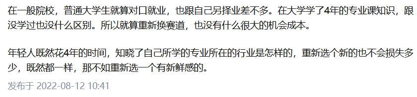
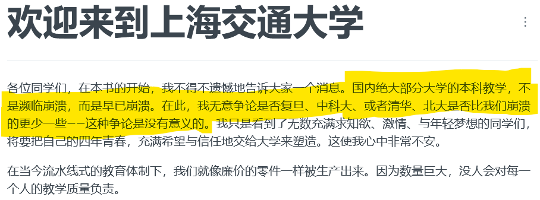

没来的不能说话
没来的不能说话啊，所以我要代替他们发言。
我国每年约有10万名青少年死于自杀，平均每分钟就有2个孩子死于自杀，8个自杀未遂。
在学校里，他们会有一个错觉，成绩好的学生的生命比成绩差的要珍贵。坏学生应该去死，不然就是拖累了班级的平均分。没人会直接说，但是家长的辱骂、老师的态度无时不刻不提醒着差生这一点。
他们所能做的，只有不断做题，期望于内卷出一个美好的未来。
- 中学是一场排名游戏
我读书的时候，学生里流传一句话，相信大家都听说过 “分分分，学生的命根”。
孩子从小到大，老师和家长只传递给了孩子”分数高于一切“的教育信条。
但是当我终于经历了小学、初中、高中、大学毕业以后，我才发现学校教的那些东西基本没什么用。
我深刻的记得，当我打电话告诉我爸，”学校里学的东西根本没用！“
他费解的答道 ”学校里学的东西怎么会没用呢？以后一定会有用的，巴拉巴拉…… “
但是在毕业数年后的今天，我依然的可以斩钉截铁的回答你”学校学的东西就是没有用！“
- 中学学什么
我小学的时候，老师教我们背语文课本、让我们学写毛笔字。
还记得小时候很辛苦的练字。但是现在半年都不一定会写字，更别提把字写得好看了。
现在计算机已经代替了写字。要写什么，随时编辑修改的word，比作文纸高效许多。
我不是说学些毛笔字不好，不应该学写毛笔字。我小时候，有许许多多时间浪费在这种成年以后再也不会拿起的东西上。如果你想，我还可以举数十个这样的例子，但是我觉得没有必要，写毛笔字这个事情足够典型了。
中学的时候，有个女同学跟我说，中考考的这些以后都没有用。我当时睁大眼睛，疑惑不解地说”真的吗？“
数十年后，我可以诚恳地点头，说她说的没错。
18岁以前，我从没学到什么有用的东西。
从6岁开始上学，如果教育不是简单重复内卷的话，12年的教育，我想我能掌握更多。
如果我想成为护士，我很早就去医院实习，观看护士是怎么照顾病人的，给他们端茶倒水递毛巾。
如果我想成为医生，我可以坐在医生旁边看ta是怎么治疗病人的。我可以从书本联系实际，最终的期末考试就是诊断病人的病情。
如果我想成为数学家，我不需要去学写毛笔字、地理、历史。最多了解一些数学的历史，其他课程都是选修。
一大部分人都会选择职业教育，从事收入丰厚的各类职业。甚至18岁的时候，就已经成为熟手了。
现在的大学生，22岁毕业以后，职业教育从没接受过、蜂拥考公考编。总有人考不上，那这样的人又该怎么办呢？从没有人指出他们该做什么。老师和家长总是说， “分分分，学生的命根”，好像考试就是人生的全部。
- 中考五五分流
看了《天注定》那个电影，被筛选下去的人都去厂里打螺丝、送外卖，做了廉价劳动力，做了人口红利。
他们筛选了我，但是并没有培养我。
在我拿到毕业证的那一天，才明白这一点。
中产以上不参与高考制度。他们的小孩初中、高中就送到发达国家留学了，等拿到高等教育文凭再回来。
因为要满足大人们对于公平的愿望，所以小孩们卷的要死。
大人们会告诉你，不要被淘汰。他们恐惧你被淘汰，过上悲惨的生活。
至于被淘汰的人怎么样？who cares？
- 大部分都转行了
现在的大学生大部分都转行了。
为什么普通大学生要反思大学没有学到什么东西？
而大学不反思反思大学没有教什么东西？
如果随便能转专业，那不少大学的很多系都得成编制的撤掉。


- 如果你想当公务员
名校学历是有用的，但是它往往代表着你从竞争激烈的考场中取胜了，并不代表你学到了什么有用的知识。
一个好的学历依然是必须的，但是这条路已经越来越卷了。随着法律法规的完善、收益也越来越低了。
绝大部分公务员不需要什么专业的。大学为什么不开一个公务员专业呢？大学就学申论、行测，争取把公务员专业的每一个学生都送进体制内。
- 上海交通大学生存手册
https://survivesjtu.gitbook.io/survivesjtumanual/

国内绝大部分大学的本科教学，不是濒临崩溃，而是早已崩溃。在此，我无意争论是否复旦、中科大、或者清华、北大是否比我们崩溃的更少一些——这种争论是没有意义的。
如果你没有读过大学，那你没有资格评论本科教育。但我读了一个还算不错的大学，我要说的确如此。国内绝大部分大学的本科教学早已崩溃。
我对大学失望在哪里呢？怎么盼都盼不到的不来上课的老师？还是浑浑噩噩只知道攀比分数的同学？
在我的鼓励下，一名同学终于下定决定从纯艺专业转去了设计专业。
还记得，在某一年，一名新入学的大一学生不满于这样的学风，举报了学校。于是老师再也不敢迟到早退了。但是这些表象都没有用。那些拥有铁饭碗的老教师们，根本不关心你在学校里能学到什么。
他们表演教学，我们表演听课。
大学竟然是表演的场合。